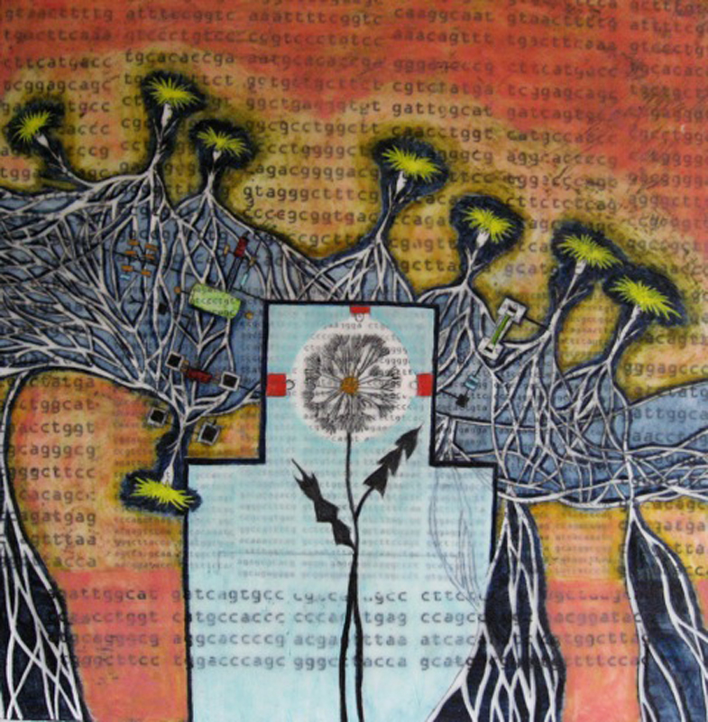

Tracy Spadafora
July 2012
Artist Statement
Persistance of Nature Series
Images of nature came into my work many years ago. Intrigued by the elegant and complex patterns of leaves and other flora, I began incorporating them in my work as symbols of our natural environment. In my paintings these organic forms are juxtaposed with symbols of our man-made environment, represented by schematic diagrams and architecture plans of the “Big Dig” artery project in Boston, MA. The leaves, pods, flowers and seeds often take on a whimsical quality as they hang, float, and blossom from a background of roads, parking lots, and industrial parks, ultimately reshaping these structured surroundings.
I work with an ancient wax painting technique called encaustic, which allows me to layer images and preserve them underneath the surface. The obscuring and burying of images within the layers of wax and paint helps to extend their meaning into the realms of memory and intuition. In these works natural structures and man-made structures converge and collide, creating a dialogue between these opposing forces. The natural environment has suffered greatly as a result of commercial, residential, and industrial development. Nature struggles to survive and find new life within the continuous sprawl of these man-made environments.
With these paintings I intend to convey a sense of the poetry and endurance of nature as a force - a force that seems to persist in spite of man’s actions. In this work I seek to address larger questions concerning the lineage of our natural and man-made environments.
DNA Series
As I worked on my “Persistence of Nature” series of paintings for a period of 10 years, other environmental concerns started to be reflected in my work in themes of natural and man-made disasters and genetic modification. It is with these themes in mind that I started my newest work, the “DNA” series.
In these paintings I start with text, which has been a part of my artwork over the years. I use the text for its visual patterning as well as to convey literal meaning. Although, in my work, the text reads more like poetry, only to suggest meaning rather than to specifically define. A friend introduced me to DNA sequences as a visual element many years ago. The sequences of letters were intriguing because they represented one universal meaning, the building blocks of life, yet each DNA string is completely unique and mysterious. My earlier paintings were composed of random sequences, but more recently, online resources have enabled me to select from a vast array of specific codes. Even so, the significance is not in the actual sequences themselves. The paintings are built on visual and symbolic associations and the layering and preserving of these images in wax helps to address a complex and shifting relationship between man, his biological roots, and the shaping of our natural environment.
Tracy Spadafora
Gallery II
NKG June 29 - July 20, 2012
Opening Reception Friday July 6, 2012 5-8 pm
NK Gallery
450 Harrison Avenue #61
Boston MA 021118
Gallery hours Wed- Sat 11am – 4pm
{kind=link}
{kind=link}
{kind=link}
{kind=link}
{kind=link}
{kind=link}
{kind=link}
{kind=link}
{kind=link}
{kind=link}